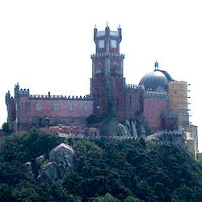

Sintra

Palàcio Nacional da Pena | ||
|  | Pena National Palace | |
| A masterpiece of Portuguese Romantic architecture, this castle was built at an altitude of around 500 m for Ferdinand of Saxe-Coburg-Gotha in 1840, the future King Fernando II, on the ruins of a former Hieronymite monastery (early 16th century). The palace features false canary yellow walls, scarlet Gothic towers, a drawbridge that has never worked, a few minarets, one or two Moorish domes and a dungeon - a real fairy-tale castle! There is also a veiled reference to horror films, with the monster concealed above the door, holding up a canopy and its feet hidden in enormous shells sprouting cacti. Everything has remained intact since the sovereigns fled in 1910. The 500-acre grounds are surrounded by a wall. Discover the valley of tree ferns and giant sequoias, the camellia garden, the Countess' mysterious chalet and Cruz Alta, the 16th century calvary that culminates at the Serra's highest point (529 m). | ||
They say that pictures are worth a thousand words, so I will let you admire Pena Palace in silence...
Click on the pictures for an enlargement.
 |
 |
 |
 |
 |
 |